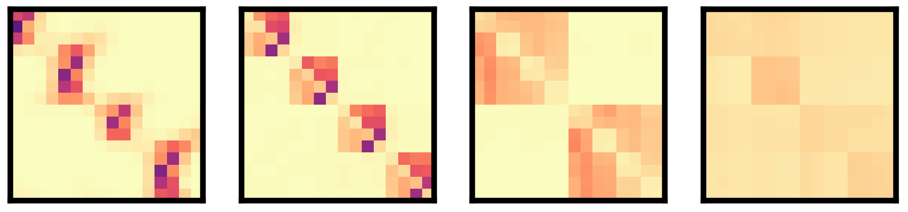

Jérôme Garnier-Brun
Marie Skłodowska-Curie Postdoctoral Researcher
Department of Computing Sciences
Università Bocconi, Milan, Italy

About me
Hello!
My name is Jérôme Garnier-Brun and I am currently a Marie Skłodowska-Curie postdoctoral research fellow at Università Bocconi in Milan, Italy. I am working with Marc Mézard as part of the Machine Learning & Statistical Physics group of the Department of Computing Sciences on questions relating to the role of the structure of data for machine learning. I am also interested in emerging questions around collective and decentralized learning, as well as fundamental aspects of the statistical mechanics of complex systems.
Before that, I did my PhD at École polytechnique within the CFM chair of Econophysics and Complex Systems under the supervision of Jean-Philippe Bouchaud and Michael Benzaquen. There, I mainly worked on problems at the interface between the physics of spin-glasses and disordered socioeconomic systems.
Outside of research, I enjoy hiking, trail running and cycling in the summer, and skiing and ski mountaineering in the winter. I am also a poor but enthusiastic footballer and a (self-proclaimed) decent cook.
Recent news
- September 2025: new preprint on a minimal model of learning agent in a structured environment with Sebastiano Ariosto, Luca Saglietti and Davide Straziota is out!
- August 2025: Our paper "Hydrodynamics of Cooperation and Self-Interest in a Two-Population Occupation Model" with Ruben Zakine and Michael Benzaquen has been accepted for publication in Physical Review Letters! The article has also been selected in the Editors' Suggestions, and featured on École polytechnique's website (in french).
- July 2025: I will be presenting our work on how transformers learn stuctured data as a poster at ICML in Vancouver! We will also have a poster on preliminary work on generative diffusion at the MemFM workshop.
- April 2025: I am happy to announce I have been awarded a Marie Skłodowska-Curie fellowship for my project SPIRAL (Structured Physics-Inspired Representations and dAta models for efficient Learning), extending my stay at Bocconi under the supervision of Marc Mézard!
Contact
Email: jerome DOT garnier AT unibocconi DOT it
Learning representations from structured data
Machine learning systems often excel when they can leverage underlying structure in data—such as hierarchies, symmetries, or latent generative processes. Yet, despite the remarkable empirical success of deep learning, the theoretical understanding of how models exploit this structure remains limited. What kinds of structure matter most? How are they internalized by different architectures? And how do these inductive biases affect learning and generalization?
My research explores these questions through simplified yet expressive models of structured data, such as tree-like or hierarchical generative processes. These toy models provide a controlled setting to test how learning systems uncover and exploit latent structure. In recent work, for instance, we have shown how transformers learn hierarchical features in a sequential and near-optimal way, shedding light on their surprising capacity for structured inference.
More broadly, this line of work aims to bridge the gap between statistical physics, learning theory, and practical machine learning, offering tools to analyze not just what models learn, but how and why they learn it.

Visualization of attention patterns in a four layer transformer trained on tree-based hierarchical data.
Generalization and memorization in diffusion models
Understanding how and when machine learning models generalize beyond their training data is a central challenge in modern AI. While diffusion models have achieved striking success, the mechanisms by which they memorize, interpolate, or generalize remain elusive, despite major privacy and intellectual property related considerations.
My research investigates these questions through a statistical physics lens, combining theoretical analysis with simplified data models that allow for precise control and insight. In particular, we explore whether analogies with disordered systems such as Random Energy Models can shed light on their learning dynamics. By drawing connections between inference, energy landscapes, and generative trajectories, we hope to better understand the limits and potential pathologies of modern generative models.
Self-supervised learning in rich environments
In many real-world situations, agents must learn without explicit supervision or rewards, relying only on the internal consistency of their own predictions. This is particularly relevant in data-rich but label-poor regimes; a setting where self-supervised learning becomes both necessary and powerful.
In this context, we develop minimal models of agents that learn from their own predictions in such environments. Inspired by ideas from artificial life and statistical physics, these "replicator" agents adapt their internal parameters based on self-consistency rules applied over fresh samples of structured data.
This framework provides a new theoretical lens on self-supervised learning: it allows us to identify the minimal ingredients required for meaningful adaptation, analyze how environmental structure interacts with internal dynamics, and quantify learning performance under data constraints. Such simple models also opens the door to studying collective learning in multi-agent systems with the tools of statistical mechanics.
Disordered systems with non-reciprocal interactions
Complex systems operate in rugged, high-dimensional landscapes—from neural representations to economic equilibria. Inspired by the physics of spin glasses, my research investigates the dynamics and structure of such disordered systems, especially when agents or components interact in asymmetric and non-reciprocal ways.
In particular, I study the emergence of glassy phases in learning and decision-making systems, characterized by long memory, frustration, and multiplicity of equilibria. These systems challenge conventional notions of optimization or convergence, highlighting instead the role of noise, instability, and irreversibility in shaping collective behavior.
Recent work has focused on extending classical disordered models to include non-reciprocal interactions, common in many real-world systems from neural circuits to socioeconomic systems, and studying how such asymmetries affect the glassy dynamics of disordered systems.
Nonequilibrium hydrodynamics of spatial agent-based models
Complex collective behavior often emerges from simple local interactions, especially in systems far from equilibrium. Whether in urban organization, ecological migration, or socioeconomic dynamics, agent-based models (ABMs) offer a powerful framework for exploring how individual-level rules give rise to macroscopic patterns.
My research uses minimal ABMs inspired by statistical physics and active matter to study how heterogeneity, feedback, and spatial constraints shape collective outcomes. These models bridge micro and macro scales, allowing us to derive effective continuum descriptions—such as hydrodynamic or field-theoretic limits—that capture emergent flows, phase transitions, and instabilities.
Recent work has notably focused on extending classical Schelling-like occupation models into genuine nonequilibrium settings, where feedback between local densities and agent preferences can produce pattern formation, hysteresis, or critical behavior. Such models reveal the deep connections between socioeconomic processes and physical systems, offering both conceptual insights and a quantitative framework for exploring decentralized adaptation in complex environments.